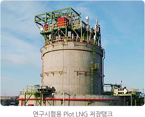
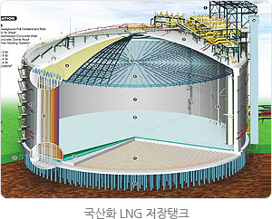
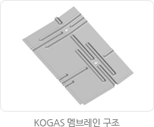
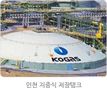
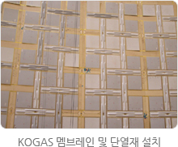

LNG기술
LNG저장탱크
LNG 저장탱크 개발 및 상품화
LNG저장탱크 국산화 개발완료
우리공사는 2001년 9%니켈형 저장탱크 기술을 확보한데 이어, 2002년 LNG저장탱크 국산화 개발사업을 성공적으로 완료하여 멤브레인형 저장탱크 기술을 확보함으로써 프랑스와 일본에 이어 세계에서 세 번째로 9%니켈형과 멤브레인형 두기종 모두에 대한 핵심기술을 보유한 국가로 발돋움하였습니다.
9%니켈형 LNG저장탱크의 경우 14만㎘급 표준설계를 완료하여 통영생산기지 6~12호 탱크와 평택생산기지 11~14호 탱크에 적용하였고 2005년부터 2008년까지 단계적으로 상업운전 중에 있습니다. LNG저장탱크 설계에 대해서는 해외기술에 의존하지 않고 완전한 기술자립을 이루게 되었습니다.
이러한 성과에 만족하지 않고 우리공사는 2005년 지상식 저장탱크로는 세계 최대용량인 20만㎘급 9%니켈형 저장탱크 개발에 성공하였다. 이 20만㎘급 저장탱크 설계는 통영생산기지 13~16호 탱크와 평택생산기지 15~23호 탱크 등 모두 13기에 적용되어 현재 건설 중에 있다. LNG저장탱크의 대형화 효과는 탱크 1기당 50억원의 설계비와 70억원의 건설비를 절감할 수 있는 효과를 기대할 수 있습니다.
우리공사는 1999년 단열재와 멤브레인의 개발을 완료하여 국내외에 특허를 출원하였습니다. 특히 국산화 개발된 단열재의 경우 일본(2000.6)과 프랑스(2001.11)에서 특허를 취득하였고, 2001년 ㈜화인텍에 기술을 이전하여 상업생산을 시작하였으며, 인천생산기지 13~20호 탱크에 이 국산 단열재를 적용하여 탱크 1기당 45억원의 원가절감과 86억원의 외화절감효과를 거두었습니다.1997년에 개발이 완료된 KOGAS 형 멤브레인은 2001년 국내특허를 취득하였고, 향후 유력 LNG 시장으로 떠오르고 있는 중국과 인도에 특허를 출원하여 해외 프로젝트에 진출할 수 있는 길을 만들었습니다. 연구개발원에서는 자체개발한 멤브레인과 단열재를 적용한 Pilot 저장탱크를 건설하여 연구시험용으로 사용하고 있습니다. 이 Pilot 저장탱크는 멤브레인형으로 순저장용량이 1,000㎥(총저장용량 1,300㎥)이며 주요 기반기술의 연구개발에서부터설계, 시공, 시운전 등 엔지니어링 업무까지 일련의 과정을 국내기술로 수행하였고, 특히 초저온 상태에서의 멤브레인의 거동을 연구하기 위한 계측장치를 장착하고 있는 세계에서 유일한 연구시험용LNG저장탱크입니다. 연구개발원에서는 이 Pilot 저장탱크를 이용하여 국산화 개발된 단열재와 멤브레인을 이용한 내조시스템의 성능을 향상시키기 위한 연구를 지속적으로 수행하고 있습니다.
연구개발원은 Pilot LNG저장탱크를 이용하여 LNG 저장거동을 연구하고 장기적 관점에서 Pilot 저장탱크에서 획득되는 데이터를 기초로 LNG저장탱크의 잔류수명을 예측할 수 있는 기술을 개발하여 궁극적으로는 LNG저장탱크의 수명을 획기적으로 연장할 수 있는 기술을 개발할 예정입니다. 또한, 27만㎘급 초대용량 LNG저장탱크를 개발하여 건설비와 운전비를 절감하고 저장탱크 건설부지 이용효율을 극대화할 예정입니다.
9%니켈형 LNG저장탱크의 경우 14만㎘급 표준설계를 완료하여 통영생산기지 6~12호 탱크와 평택생산기지 11~14호 탱크에 적용하였고 2005년부터 2008년까지 단계적으로 상업운전 중에 있습니다. LNG저장탱크 설계에 대해서는 해외기술에 의존하지 않고 완전한 기술자립을 이루게 되었습니다.
이러한 성과에 만족하지 않고 우리공사는 2005년 지상식 저장탱크로는 세계 최대용량인 20만㎘급 9%니켈형 저장탱크 개발에 성공하였다. 이 20만㎘급 저장탱크 설계는 통영생산기지 13~16호 탱크와 평택생산기지 15~23호 탱크 등 모두 13기에 적용되어 현재 건설 중에 있다. LNG저장탱크의 대형화 효과는 탱크 1기당 50억원의 설계비와 70억원의 건설비를 절감할 수 있는 효과를 기대할 수 있습니다.
우리공사는 1999년 단열재와 멤브레인의 개발을 완료하여 국내외에 특허를 출원하였습니다. 특히 국산화 개발된 단열재의 경우 일본(2000.6)과 프랑스(2001.11)에서 특허를 취득하였고, 2001년 ㈜화인텍에 기술을 이전하여 상업생산을 시작하였으며, 인천생산기지 13~20호 탱크에 이 국산 단열재를 적용하여 탱크 1기당 45억원의 원가절감과 86억원의 외화절감효과를 거두었습니다.1997년에 개발이 완료된 KOGAS 형 멤브레인은 2001년 국내특허를 취득하였고, 향후 유력 LNG 시장으로 떠오르고 있는 중국과 인도에 특허를 출원하여 해외 프로젝트에 진출할 수 있는 길을 만들었습니다. 연구개발원에서는 자체개발한 멤브레인과 단열재를 적용한 Pilot 저장탱크를 건설하여 연구시험용으로 사용하고 있습니다. 이 Pilot 저장탱크는 멤브레인형으로 순저장용량이 1,000㎥(총저장용량 1,300㎥)이며 주요 기반기술의 연구개발에서부터설계, 시공, 시운전 등 엔지니어링 업무까지 일련의 과정을 국내기술로 수행하였고, 특히 초저온 상태에서의 멤브레인의 거동을 연구하기 위한 계측장치를 장착하고 있는 세계에서 유일한 연구시험용LNG저장탱크입니다. 연구개발원에서는 이 Pilot 저장탱크를 이용하여 국산화 개발된 단열재와 멤브레인을 이용한 내조시스템의 성능을 향상시키기 위한 연구를 지속적으로 수행하고 있습니다.


또한, 2004년에 착공한 인천생산기지 19, 20호 지하식 20만㎘ 저장탱크에 우리공사가 개발한 멤브레인과 단열재를 적용하기 위하여 멤브레인 시스템을 설계하고 멤브레인 패널을 제작, 공급하는 등 개발기술의 상용화를 추진해 온 결과 2008년 10월에 19호 탱크가 성공적으로 상업운전을 개시함으로서 오랜 개발여정에서 화룡점정을 찍게 되었습니다. 이어 2009년 5월 인천생산기지 20호 탱크가 상업운전에 들어감으로서 KOGAS 멤브레인 실용화 프로젝트를 성공적으로 완료할 수 있게 되었습니다.
연구개발원은 Pilot LNG저장탱크를 이용하여 LNG 저장거동을 연구하고 장기적 관점에서 Pilot 저장탱크에서 획득되는 데이터를 기초로 LNG저장탱크의 잔류수명을 예측할 수 있는 기술을 개발하여 궁극적으로는 LNG저장탱크의 수명을 획기적으로 연장할 수 있는 기술을 개발할 예정입니다. 또한, 27만㎘급 초대용량 LNG저장탱크를 개발하여 건설비와 운전비를 절감하고 저장탱크 건설부지 이용효율을 극대화할 예정입니다.
인천생산기지 19,20호 LNG 저장탱크에 KOGAS멤브레인 적용
우리공사가 자체개발한 멤브레인 LNG저장탱크 기술이 인천생산기지 19, 20호 지중식 탱크(20만㎘)에 적용되었습니다. 이 프로젝트는 2004년부터 2009년까지 5년 반에 걸쳐 우리공사의 멤브레인 기술을 적용한 내조시스템(Membrane Containment System)을 설계하고, 공사에 필요한 멤브레인 패널을 제작하여 공급하고 현장에 설치하는 일련의 일들을 연구개발원에서 담당하였습니다.
이 작업을 수행하기 위하여 멤브레인 패널을 제작하고 용접하는 새로운 기술이 개발되어 특허를 출원하게 되었습니다. 특히 세계에서 처음으로 멤브레인 주름부에 용접이 필요 없는 구조로 멤브레인 패널을 제작하기 위하여 플라즈마 자동용접기술이 개발되었습니다.
이 작업을 수행하기 위하여 멤브레인 패널을 제작하고 용접하는 새로운 기술이 개발되어 특허를 출원하게 되었습니다. 특히 세계에서 처음으로 멤브레인 주름부에 용접이 필요 없는 구조로 멤브레인 패널을 제작하기 위하여 플라즈마 자동용접기술이 개발되었습니다.



오랜 산고 끝에 19호 탱크는 2008년 10월에, 20호 탱크는 2009년 5월에 각각 성공적으로 상업운전을 시작함으로서 우리나라는 프랑스, 일본에 이어 세계에서 3번째로 멤브레인형 LNG저장탱크 상용화 기술보유국이 되었습니다. 인천생산기지는 저장탱크 20기(저장용량 288만㎘)를 갖춘 세계 최대 LNG인수기지로 발돋움하게 되었습니다.